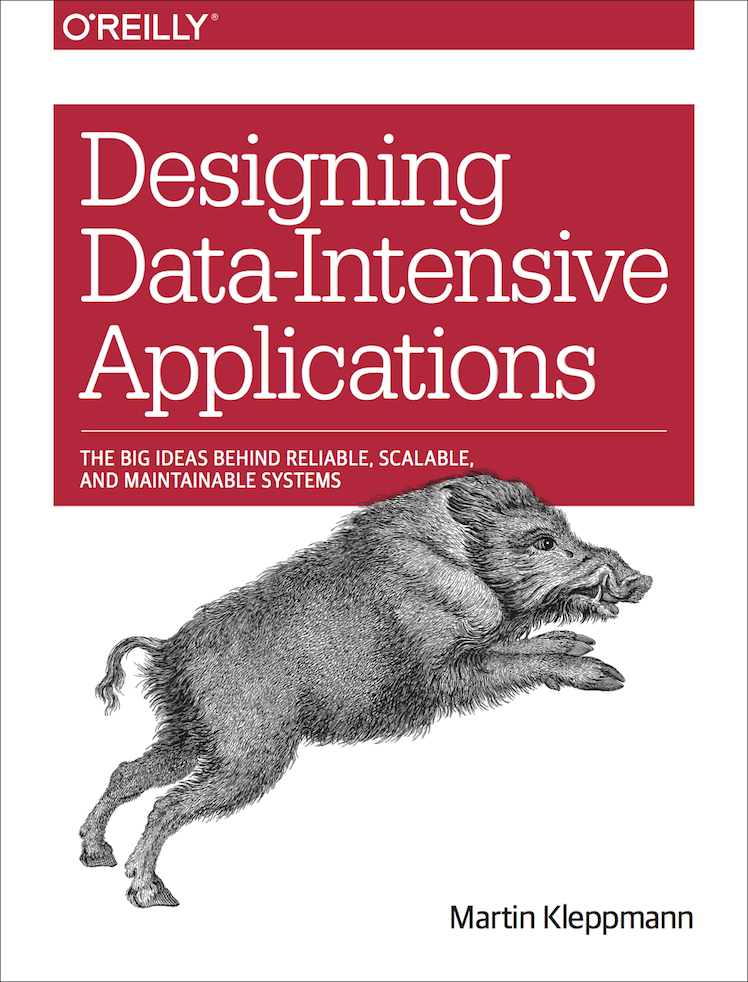
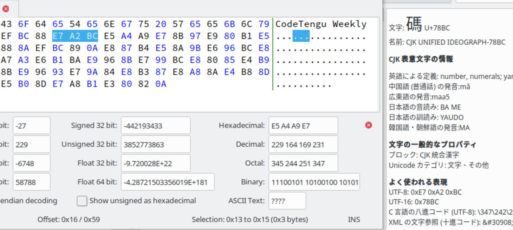

Hello World
CodeTengu Weekly 碼天狗週刊
CodeTengu Weekly 會在 GMT+8 時區的每個禮拜一 AM 10:00 出刊，每期會由三位不同的 curator 負責當期的內容，每個 curator 有各自擅長的領域，如果你在這一期沒有看到自已感興趣的東西，可能下一期就會有了。你也可以瀏覽一下前幾期的內容。
目前的 curator 陣容：
- @vinta - I failed the Turing Test - 科幻迷，最近在讀 The Forever War
- @saiday - Imnotyourson - 教召報名成功～
- @tzangms - Oceanic / 人生海海 - 衝動型購物
- @fukuball - ImFukuball - 婚後生活
- @mingderwang - Ethereum enthusiast
- @kako0507 - 熱愛嘗試新事物的前端工程師
- @chiahsien - 新年新專案，好刺激啊！
- @hiroshiyui - 沒有人是一座孤島
- @uranusjr - Smaller Things - 不愛談技術的技術人，最近對做菜很有興趣
- @kkdai - 態度萬歲 - 喜歡 Golang 的略懂工程師，最近在學機器學習 (疑?)
- @yhsiang
你也可以關注我們的 Facebook、Twitter、GitHub 或微博，有很多 Weekly 看不到的內容。有任何建議或疑問也可以來 Gitter 聊聊，歡迎亂入。
 @vinta
@vinta

A Review of "Designing Data-Intensive Applications"
最近在讀 Designing Data-Intensive Applications 這本書，各方評價之好，忍不住要跟大家分享。這本書幾乎涵蓋了關於資料庫和分散式系統的所有你應該知道的基礎知識，重點是還講得淺顯易懂。有興趣的人可以先看看這篇書評（嚴格來說應該叫導讀了）。
延伸閱讀：
Google - Cloud API Design Guide
Google 出品的 API 設計規範，適用 REST 和 RPC API。
我覺得比較有實踐意義的是 Custom Methods 這個章節，是嘛，要把所有的操作邏輯都 mapping 成 REST 風格的 CRUD 根本就不現實嘛。
Secure Web Development With Django (and Python!)
這是 DjangoCon US 2016 的一個 talk，專門在講 Web 開發常常遇到的安全性問題。雖然是簡報，但是內容的份量很足。作者先解釋了老生常談的 OWASP Top 10 漏洞（是說這個 Top 10 都是 2013 年的版本了啊），再分別介紹這些問題在 Django 裡可以怎麼應對。作者 James Bennett 就是 Django 的 core developers 之一，所以他在簡報的最後也提到了不少 Django 曾經血淋淋地犯過的錯誤的技術決策。
雖然說只要是成熟一點的 Web Framework 應該都能夠防範大部分常見的安全性問題（或者至少漏洞會比較快被修正），當然前提是你有啟用而且有正確地使用那些機制。不過還是有很多細節必須由 developers 自己留意。尤其是現在的系統的技術棧和 infrastructure 越來越複雜，可能出錯的地方也越多，有些甚至是非常低級的漏洞，比如說直接把 AWS root key 上傳到公開的 repo 或是讓 Redis、Elasticsearch、RabbitMQ 可以被 public access 而且還沒有設定 auth。
延伸閱讀：
Overview of Online DDL in MySQL
MySQL 的官方文件裡非常清楚地整理了各種 DDL (Data Definition Language) 的執行特性，例如需不需要 rebuild 整個 table 或是只需要修改 metadata，以及在執行的過程中能不能允許 DML (Data Manipulation Language)。強烈建議每次要做資料庫的 schema change 前都先檢查一下。就算你是要用 pt-online-schema-change。
不過某些支援 ALGORITHM=INPLACE 的 DDL 的行為在 Galera Cluster 裡可能會有所不同，如果你是用 TOI (Total Order Isolation) 的話，Galera 還是會 block 寫入操作。
延伸閱讀：
Bash Shell Scripting
雖然平常開發和做一些 DevOps 的任務時常常需要寫 shell script，不過因為一直沒有好好地學過 Bash，每次寫起來都不是很踏實，最近終於趁著放假好好地惡補了一下 Bash 相關的知識和寫法。
延伸閱讀：
@hiroshiyui
id Software Programming Principles
id Software 不消多說，電腦遊戲玩家幾乎不可能不知道這家公司。這篇文章摘錄了他們在 GDC 2016 發表的演說中提到的、小型團隊規模的產品開發思維：
- 不要想著先做 prototype，不要有「先求有，再求好」的苟且心態，要想著持續產出「品質隨時都可交貨」的程式
- 你寫的遊戲程式，要能隨時讓團隊裡的任一成員都可執行（即 CI/CD 的精神）
- 你寫的程式，要盡可能追求讓函式簡單
- 讓好工具幫忙你製作更好的遊戲，把時間花在尋找更好的工具永遠是件好投資
- 自己的程式碼提交出去前要先好好測試過，維持一定品質，不要浪費其他人的時間在幫你 debug
- 自己生的 bug 自己修，馬上修！
- 專注在你眼前的產品，為這個產品寫程式就好，不要為了八字都還沒一撇的新作考慮程式碼重用之類的問題，等到你要開發新作品了，到時候你寫的程式品質通常會比現在更好
- 透過封裝函式來確保設計的一致性
- 多溝通，讓團隊其他人知道你寫的這段程式是在幹什麼，保持程式的透明，不要讓它黑箱化
- 一種米養百樣人，每個程式設計師的養成與思維各有不同，尊重彼此差異與產出的成果
Design Patterns for Humans™ - An ultra-simplified explanation
以淺白的敘述講解幾種 Design Patterns，類似的資源還有《深入淺出設計模式》(Head First Design Patterns) 這本書。
Design Patterns 就像武功祕笈，你的拳腳功夫練到一定程度了，發現自己沒個套路、總像在亂打一通時，就該來翻一翻了。只是像我此類資質駑鈍之輩、知道 Design Patterns 重要、但買了《物件導向設計模式 - 可再利用物件導向軟體之要素》卻還是讀不透箇中精髓時，這類科普讀物就有很好的引導作用。

A Programmer’s Introduction to Unicode
一篇講解 Unicode 的懶人包，帶過字面、BMP、編碼方式 (UTF-8, UTF-16...)、動態組字等概念，非常值得一讀。
身為一個 IT 從業人員，搞懂字元集 (character set)、字元編碼 (character encoding) 是基本功，如果你讀到這裡，對這些主題的認知還是一張白紙，趕快去補足！我個人的經驗與建議是，可以拿個十六進位編輯器，看看一份你認為再尋常不過的 plain-text 檔案，「字」在裡頭究竟是怎麼儲存的。
題外話，學會利用十六進位編輯器這種工具去看資料逐位元的組成，這種工夫能夠讓你在對照規格書下，瞭解某種檔案格式，也能幫你在除錯時省下不少通靈、瞎猜的時間。
同場加映：
The Story of Firefox OS
本期我最想分享的一篇文章。我自己身為一個 Firefox OS 腦殘粉，見證了從專案公佈到它在市場上鎩羽而歸的過程，雖然也有很多故事與心得可講，但總是比不上這位身為專案成員的作者寫的。他從時間沿革的面向、從產品設計的面向、從參與者的面向、從市場的面向去看 B2G（Boot to Gecko，Firefox OS 的專案名稱，Gecko 是 Firefox 的 rendering engine）這個專案，以及從中習得的經驗、教訓。
內容非常精彩，雖然文長，但是推薦給每一位同樣在做產品專案的人閱讀，不要直接 END。
 @yhsiang
@yhsiang
Testing React Components Best Practices
對 React Component 測試有興趣的朋友，建議可以先看 Integration Testing React and Redux With Mocha and Enzyme。
而這篇講得比較深入，甚至搭配了 Jest 的 snapshot，並且告訴你要注意的地方。
- 測試的組織性
- 最小的測試確認 Component render
- 除了 renders 以外還需要測什麼？
- 用明確的 setup() 取代 beforeEach()
- 測試行為
- 使用 helper function
Functional Programming (FP) By Any Other Name…
Kyle Simpson 介紹他新的 Library，FPO。裡面提到蠻多有趣的 FP 觀念，一般 ramda 或 lodash，我們都是先定義 mapper function 才丟 array，如果想要反過來要怎麼做。可以利用 named arguments 達成，雖然許多語言都有這個語法，但是 javascript 卻沒有，所以要用其他方式來達成。
對 FP 有興趣的可以深入一看。
Implementing Critical CSS on your website
Critical CSS 是現代前端工程師必須知道的，這篇文章提到許多跟網頁 performance 有關的觀念，例如 AMP、google speed insights，也有提到 SEO 的連結。
最後介紹他們怎麼在 CraftCMS 上面實現 Critical CSS，主要使用 critical 這個 npm package 搭配 gulp 來做 automation 的部分。
建議還在為網站載入效能苦惱的朋友一看。
API Design: Think First, Code Later
算是一篇 RESTful API 設計的最佳實踐大全，如果你不確定自己撰寫出來的 API 是不是好的設計。 建議先停下來，把這篇文章看完，避免文章裡面提到的錯誤。相信會讓你的前端工程師更開心！
適合學習撰寫 API Server 的朋友一看！